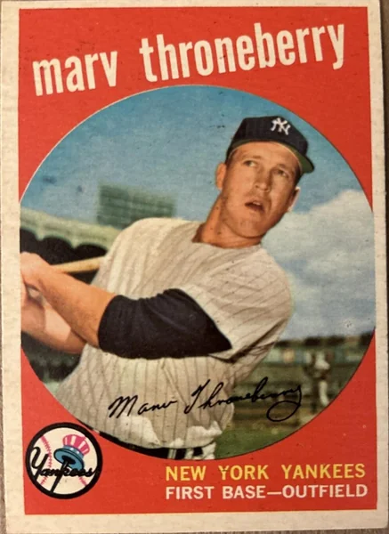

Marv Throneberry "Marvelous Marv"
Career Highlights & Facts
(Facts are AI-generated and may require verification)
- Shared a major league roster with an older sibling who also played the same position.
- Became a pop culture icon through a series of self-deprecating television commercials for a light beer brand.
- Gained notoriety for a base-running blunder where an umpire noted that two bases were missed on a single play.
Would you like to find out more about Marv Throneberry?
Player Biography
Marv Throneberry March 4, 2019 / in BioProject - Person Siblings / by admin This article was written by Alan Raylesberg Marvin Eugene Throneberry was born to be a Met. His very initials — MET — said so. As a member of the original 1962 New York Mets, Marv Throneberry’s colorful exploits (both good and bad) earned him the nickname “Marvelous Marv.” While remembered as much for his gaffes as his clutch performances, Throneberry carved out a seven-year career in the Major Leagues. In 1962, playing regularly for a Mets team that may have been the worst in history 1 , Throneberry had his best season. He hit 16 home runs, several of them in dramatic fashion. He became a legend in his own time, went on to become well known in commercials for Miller Lite Beer and even had a rock band named after him. 2 Throneberry was born on September 2, 1933, in Colliersville, Tennessee, a rural community 30 miles east of Memphis, with a population of approximately 1,000 people. 3 Throneberry grew up in the nearby town of Fisherville, along with his older brother, Faye . Faye, two years older, made it to the big leagues before Marv and played for eight years. Theirs was one of more than 350 brother combinations who have played major league baseball. 4 Marv and Faye’s parents were Walter Hugh Throneberry (1902-1946) and Mary Alice Callicut or possibly Callicutt (1903-1993). Walter and Mary Alice were married in 1922 and a year later had the first of their three sons, Walter (1923-2000). The Throneberry boys were farm boys, growing up on the family farm in Fisherville. They also had a sister, Lurlene. Marv lived in Fisherville his whole life, passing away there in 1994, from cancer, at the age of 60. 5 Throneberry married Dixie Morton, a native of Rossville, Tennessee, who had their first child, a daughter, while Throneberry was still in high school. They would eventually have three daughters and two sons. 6 When Dixie passed in January 23, 2016, at the age of 81, she had 11 grandchildren and 15 great grandchildren. 7 Throneberry was a star baseball player at South Side High School in Memphis, where he twice made the All-City team. 8 In 1952, he signed with the Yankees after turning down an offer from the Boston Red Sox, the team that brother Faye then played for. 9 Throneberry received a $50,000 signing bonus, a large amount in those days. Although Throneberry is best remembered for his sometimes magical, sometimes comical, 1962 season with the Mets, long before that he was a minor league phenom of whom great things were expected. A feared slugger in the minor leagues, Throneberry hit 16 home runs in just 88 games during his 1952 debut season. He hit 30 more in 1953 and 21 in 1954. Then, playing for the Denver Bears in the American Association, hit 36, 42 and 40 homers in consecutive seasons (1955-57) to lead the league in each of those years, and was named the league MVP in 1956. After playing one game for the Yankees in 1955, Throneberry made it to the majors for good in 1958, playing for the Yankees and then the Kansas City Athletics and Baltimore Orioles before finishing his career with the Mets in 1962 and 1963. Despite a swing that some compared to Mickey Mantle , Throneberry never had the success in the majors that he had in the minors. The husky (6 feet, 190 pounds) 10 left-hand hitter was considered a “can’t miss prospect,” slated to replace the aging veteran Joe Collins as the Yankees’ first baseman either in a platoon with Bill “Moose” Skowron or as a regular, with Skowron moving to third base. 11 While Throneberry had his opportunities, Skowron’s presence kept him from getting significant playing time and he never realized his apparent potential. After his one-game appearance with the Yankees in 1955, 12 Throneberry was expected to compete for a roster spot the following season. Yankees farm boss, Lee MacPhail described him as “an up-and-coming first baseman [who] has vastly improved in the field” and “is not very far from a Yankees job.” He showed his flair for the dramatic in spring training when he hit a three-run home run with two out in the ninth to tie a game at 4-4. 13 Despite those heroics, Throneberry returned to the minors for the 1956 season. The then 22-year-old Throneberry continued to figure in the Yankees plans. Famed Yankees scout, Tom Greenwade (who signed Mickey Mantle), called Throneberry “the most improved player in the American Association.” 14 His American Legion coach, Lew Chandler, said that Throneberry “had the best potential of any kid I worked with. He was fast, he could throw and hit. He didn’t field too well but he kept learning. He kept hitting around .500 for me and I knew his fielding would come.” 15 After his MVP season in 1956, other teams inquired about Throneberry’s availability. 16 The Yankees, however, were invested in Throneberry; he went to spring training in 1957 “with high hopes of taking Joe Collins’ job as first sacker against righthanded pitching.” 17 In a poll of major league farm bosses, Throneberry finished tied for third in voting for the “best prospects to make the major leagues” 18 and The Sporting News listed him as one of several rookies with a “can’t miss tag.” 19 Yankees skipper, Casey Stengel , said that “all this boy needs is a little more polishing.” 20 The New York Yankees Yearbook touted Throneberry as one of the entries in “the 1957 rookie sweepstakes.” The Yearbook noted that the coaching staff “will concentrate on cutting down his strikeouts” which had “improved” from 150 times in 1955 to 132 times in 1956. 21 When Bill Skowron fractured his thumb in spring training, the way was paved for Throneberry to win the first base job. 22 Manager Stengel remarked that “Throneberry has made a splendid impression on everybody, and if we wanted to listen to trade conversation, he would be in big demand”. 23 Unfortunately for Throneberry, he reported to spring training with a sore arm that did not heal and was returned to Denver, disappointed not to make the cut. 24 The Yankees of the 1950s were loaded with talent, in the midst of Casey Stengel’s incredible run of 10 pennants in 12 years along with seven World Championships. The reserve clause bound Throneberry to the Yankees, “although he [was] good enough to make almost any other major league club.” 25 As the 1958 season approached, with the Yankees having failed to win the World Series in two of the prior three years (at the time a major disappointment), changes were in order and young players like Throneberry could no “longer be detoured.” 26 With Skowron having back issues and the Yankees needing a left-hand hitting first baseman, Throneberry had a “tremendous opportunity” to finally win a roster spot. 27 The now 24-year-old Throneberry, frustrated in his inability to crack the Yankees’ deep roster, said that he hoped to be traded if he did not make it this time around. “It’s great to be a Yankee but not in the minor leagues,” he said. 28 Throneberry, confident in his abilities, noted that he had played Winter Ball in the Nicaraguan League at his own request, “for the sole purpose of correcting his weakness swinging at bad pitches” 29 while also noting that “I guess I’m doing all right as a fielder…since I finished up with the top average for first basemen in the American Association.” 30 With Joe Collins retired, the opening was there and Throneberry took it, becoming a member of the 1958 Yankees. After seeing considerable playing time in May substituting for an injured Skowron, Throneberry ended up with a part time role in 1958. He appeared in 60 games, often as a pinch hitter, while starting 35 games at first base and playing three games in the outfield. While Throneberry hit a disappointing .227, he did hammer seven home runs in only 150 at-bats. 31 His flair for the dramatic was in evidence on May 22 when he hit a home run in the ninth inning to give the Yankees a win over the Detroit Tigers. Going into the 1959 season, the Yankees Yearbook noted that Throneberry “showed flashes of that great [minor league home run] power with the Yanks last year, but a strikeout tendency limited his first base and outfield duty.” While Stengel praised him in spring training for “hitting hard and fielding with class in right field,” Throneberry started only 44 games, 34 of them at first base and the rest in the outfield. He was often used as a pinch hitter and batted .240 with eight home runs in 192 at bats. With no regular position for him on the Bronx Bombers, Throneberry was traded to the Kansas City Athletics after the 1959 season. It was one of the more memorable trades of all time, the one that brought Roger Maris to the Yankees. 32 Casey was sorry to see Throneberry go, aware that “he could easily be giving up a potential slugging champion of the American League.” 33 Stengel pointed out “he has to play every day… he never had a proper chance with us. How could he, with Bill Skowron ahead of him at first base? But if Marv gets to work all through spring training and then plays regularly, he might be one of the top long-ball hitters in the league.” 34 Throneberry had his moments with the Athletics, continuing to demonstrate his power with a flair for the dramatic. On September 25, 1960, he hit a pinch-hit grand slam home run to beat Detroit. On May 19, 1961, he drove in all four Kansas City runs, including with a three-run home run, in a 4-3 win over Minnesota. After playing in 104 games in 1960 and 40 in 1961, the Athletics traded Throneberry to Baltimore for outfielder Gene Stephens . While hitting only .238 for the Athletics in 1961, Throneberry had six home runs and 24 RBIs in only 130 at bats. He hit five more home runs in 96 at-bats for Baltimore. After playing nine games for the Orioles in 1962, Throneberry was traded on May 9 to the Mets for a player to be named later. 35 Writing in The New York Times, Robert Lipsyte said “Throneberry’s acquisition marks a radical departure from the Mets’ practice of stocking the club with vintage talent of limited durability but crowd-drawing appeal.” Lipsyte remarked that Throneberry’s “major league promise has always been considerably louder than his bat,” adding that as a Yankee he “was unable to dislodge Bill (Moose) Skowron at first despite his size…good arm and considerable speed afield.” 36 It was Casey Stengel, now manager of the Mets, who brought Throneberry back to New York, hoping to tap the slugger’s unrealized potential. The acquisition of Throneberry by the Mets was also historic as he became the first player to play for both the Yankees and the Mets. 37 The 1962 Mets, managed by the colorful Stengel, were an expansion franchise as National League baseball returned to New York following the departure of the Giants and Dodgers after the 1957 season. Those Original Mets won only 40 games and lost 120. Their ineptness, including the unique way that they lost many of their games, made them a lovable, popular, team that drew nearly one million fans to the old Polo Grounds. 38 Many books have been written about the ‘62 Mets. The title of columnist Jimmy Breslin’s classic 1963 book, Can’t Anybody Here Play This Game? said it best. 39 No player symbolized that team more than Throneberry. He won several games with dramatic hits. Yet, his base running and fielding (17 errors at first base in only 97 games) left much to be desired and from that the Throneberry myth was born. In his 1964 book, The Amazing Mets, New York sportswriter Jerry Mitchell wrote “name any game after [Throneberry came to the Mets] and Marv probably bungled a play in it with disastrous results or did something on the field or on the base paths that … made strong men blanch. He had the knack.” Mitchell wrote that one of his “weaknesses was a baseball in his hands when the play was somewhere other than first base, with which he was fairly familiar.” 40 As a Met, Throneberry displayed the power that once made him a top prospect. Playing in the Polo Grounds, with its odd dimensions and very short right field fence, Throneberry hit 12 of his 16 home runs before the home crowd. His biggest hits came in the most dramatic moments. His legend began to grow on July 7, 1962 in the first game of a doubleheader against the Cardinals. Stepping in as a pinch hitter with one out in the bottom of the ninth and the Mets trailing by one run, Throneberry slammed a two-run home run to win the game 5-4. On August 21, 1962, Throneberry once again pinch hit a game-winning home run in the bottom of the ninth. Adding to the drama was the fact that Throneberry was coaching at first base as the inning began. 41 The Pirates took a 4-1 lead into the bottom of the ninth. The Mets had one run in and two runners on with two out when the fans started chanting “We Want Marv! We Want Marv!” Casey obliged, taking Throneberry from the coaching box and putting him up to pinch hit. Facing the Pirates star reliever, Elroy Face , Throneberry proceeded to hit a 450- foot homer deep into the stands in right center field to win the game as the crowd went wild. 42 Throneberry had some good moments in the field as well. At the start of the 1963 season, New York Times columnist Arthur Daley looked back at the season that made him Marvelous Marv. Daley wrote about a game on August 24, 1962, when the Mets surprisingly were beating Don Drysdale and the Dodgers, 6-3, going into the ninth inning at the Polo Grounds. Maury Wills led off and hit a twisting grounder down the first base line. “Throneberry fielded it like Hal Chase and made a great stop and greater toss to Jay Hook , covering the bag. He did the same on the fleet Junior Gilliam .” Willie Davis was up next and he hit a hard liner down the right field line but “Throneberry went 10 feet in the air to spear the liner and landed on the flat of his back, the ball still in his glove.” 43 Great fielding plays by Marvelous Marv were the exception and not the rule, however. On Casey Stengel’s birthday, the Mets manager received a birthday cake. Throneberry asked Stengel “Why didn’t they give me a cake on my birthday?” to which Stengel replied “We was afraid you’d drop it.” 44 The most famous Throneberry story involved his fielding and base running miscues in the first game of a double header against the Chicago Cubs on June 17, 1962. In the top of the first inning, Throneberry botched a rundown play when he blocked a runner trying to get back to first base and was called for obstruction resulting in the runner being safe. Then, in the bottom of the inning with the Mets already trailing 4-1, Throneberry appeared to make up for the botched play when he hit a triple driving in two runs, only to be called out on an appeal play because he missed first base. As the story goes, Stengel came out to argue the call but was told by the umpire “Don’t bother, Casey, he missed second base too.” 45 In a fitting end to the game, the Mets were trailing 8-7 in the bottom of the ninth with the tying run at first when Throneberry came to bat with a chance to tie or win the game. He struck out. When Throneberry first joined the Mets, he replaced an ailing Gil Hodges at first base. Replacing the Brooklyn Dodgers legend, as Throneberry struggled in the field, led to some boos from the Polo Grounds faithful. As the season went on, the balding, round-faced Throneberry turned those boos to cheers as his dramatic hits, self-deprecating sense of humor and folksy “everyman” manner made him a fan and media favorite. August 18, 1962 was Stan Musial Day at the Polo Grounds as the Mets honored the National League legend. Yet, it was Throneberry’s fans who stole the show that day, wearing their “VRAM” T-shirts (“Marv” spelled backwards) and chanting his name to the point that an embarrassed Throneberry said “I hated to take the play away from Stan on his big day here.” 46 Throneberry received more than 100 letters a day that season and had his own Fan Club with approximately 5,000 members. His legend grew to the point that a chapter in the 1964 book, The Amazing Mets , was simply titled “Marvelous Marv.” His popularity was so great that the back cover of Can’t Anybody Here Play This Game? promoted the book with the caption “THE ‘M’ BOYS” stating “Not Maris. Not Mantle. Not Mays. It’s Marvelous Marv Throneberry and the mad, mad, mad, mad Mets.” Prior to the 1963 season, Throneberry did not get the pay raise he was seeking from Mets General Manager George Weiss , and the dispute led to Throneberry holding out during spring training. The Mets had acquired a young first baseman, Tim Harkness , from the Dodgers and also had 18-year-old Ed Kranepool , fresh out of James Monroe High School in the Bronx, to play first base. With the position suddenly crowded, and after Throneberry batted 14 times with only two hits in early season action, the Mets sent him to their Buffalo farm team on May 9. According to the New York Times, Throneberry “seemed completely depressed and angry” about the demotion. “I may be back sooner than a lot of people think”, he said, “I’m going to leave my name up there above the locker.” 47 As the Times reported, all the other Mets lockers had a hand-printed card containing the uniform number and last name of the player. Throneberry’s card did not. Rather, it said simply “Marvelous Marv.” 48 Manager Stengel said, “I hope he hits 25 or 50 home runs down there so I can pull him back quick.” 49 It was not to be. Throneberry would never return to the Major Leagues. After playing eight games with Buffalo in 1964, his professional baseball career was at an end. The mark he made on the Mets and New York baseball lived on long after he retired. “Twenty-five years after he was gone, you would still see in the crowd -V-R-A-M- which was Marv spelled backwards”, said Dixie Throneberry, Marv’s widow. “And in the crowd they would chant “Cranberry, Strawberry, we still want Throneberry.” 50 After he retired from baseball, Throneberry became well known for his role in humorous commercials for Miller Lite beer, in which he appeared with star athletes including Billy Martin . 51 The commercials would end with Throneberry saying tongue in cheek “I still don’t know why they asked me to do this commercial.” 52 There was at least one commercial featuring him alone where his punch line said it all: “If I do for Lite Beer what I did for baseball, I’m afraid their sales will go down.” 53 Throneberry’s fame was far greater than that of an ordinary .237 lifetime hitter. When he passed away in 1994, George Vecsey devoted a column to “Marvelous Marv” in the New York Times. Vecsey wrote that Throneberry “never wanted to be a lovable icon of ineptitude, but after it happened, he went along with it. He was Marvelous Marv, the ultimate Met.” “Marv missed bases. Marv dropped throws. Marv threw to wrong bases. Marv missed signs,” wrote Vecsey, noting that Throneberry came to embrace what made him famous. Throneberry would “tag along with all the superstars” in the Miller Lite commercials and would then drawl his famous and funny line about not knowing why they asked him to do the commercial. Explained Vecsey,“It meant that one of the hip fans from the Polo Grounds had made it to Madison Avenue and was using his 1962 Met-type humor to honor Marvin Eugene Throneberrry, who was, in his own weird way, a star.” 54 Throneberry was proud of his career in baseball, telling a reporter “Hey, I really wasn’t that bad a ballplayer. I always thought I was a good ballplayer. I played in the major leagues…there are millions of ballplayers in this country not good enough to make the majors.” 55 Asked why he did the commercials that made fun of his career, Throneberry said that he was “going to work just two times a month and making a great living. I can fish four or five days a week. I’ve got five boats and five motors. I don’t have to worry about things I used to worry about. I wouldn’t trade this for anything.” 56 Marv Throneberry holds a special place in the memories of Mets fans. As of December 2018, he is ranked on the “Ultimate Mets Database” 57 as the 122nd most popular player out of 1,067. Fans post their memories of him on that database and the post that best captures what he was about was written by none other than his oldest son, Jody, who wrote in 2013: My dad had many stories escalated about him and his career. Some true, some not. He was not bitter by any means about how people perceived him. He had a very large fan base for which we receive letters still to this day. He has a World Series ring … and three years before that he led the [Denver] Bears to the championship. Casey and Billy saw something in my dad and obviously enjoyed having him around. He must have been special to have over 5000 fans wear shirts with VRAM on them. He truly loved his fans. I have watched him sit around hours on end and read fan mail and sign and return them to his fans. In the last days of his life when suffering from terminal cancer he would make it a point to sign as many cards as he could and have them mailed back out. That is the Marvelous Marv we all knew and loved. 58 The New York Mets have had a colorful history. Formed in 1962, the Mets were lovable losers for many years before miraculously winning the World Series in 1969. Since then, the Mets have had four other World Series appearances as well as long stretches as a losing team. On a franchise that has had Hall of Famers like Tom Seaver , Nolan Ryan , Gary Carter and Mike Piazza, Marv Throneberry stands out — not for his statistical accomplishments but for his dramatic flair and good-natured sense of humor that allowed him to become known simply, and forever, as Marvelous Marv. Acknowledgments This biography was reviewed by Joe DeSantis and fact-checked by Stephen Glotfelty. Sources Baseball-reference.com Retrosheet.org Jerry Mitchell, The Amazing Mets (New York: Grosset and Dunlap, 1964) Notes 1 The 1962 Mets won only 40 games and lost 120. Only two teams in the modern era had worse records (the 1916 Philadelphia Athletics were 36-117 and the 1935 Boston Braves were 38-115.) 2 Throneberry, www.last.fm/music/Throneberry 3 Although Throneberry was born in Colliersville, the 1956 and 1958 New York Yankees Yearbooks listed him as having been born in Memphis and residing in Colliersville, presumably because Colliersville was near the more well- known city of Memphis. The 1957 Yankees yearbook lists him as having been born, not in Memphis, but in Fisherville where he was also said to reside. Further adding to the confusion, the 1960 and 1961 editions of Who’s Who in Baseball listed his birthplace (incorrectly) as Memphis and his residence as Colliersville. 4 Baseball Almanac, Brothers in Baseball, www.baseball-almanac.com/family/fam1.shtml , as of December 2018. 5 Faye Throneberry passed away in 1999. 6 His oldest daughter, Gail Brewer, became a teacher. As of December 2018, she was living in Pleasant Hill, California. As of December 2018, his other two daughters, Sandra Clement and Lorie Throneberry still lived in Tennessee, as did his two sons, Gil and Jody. 7 Obituary, Dixie Morton Throneberry, https: . One of those grandchildren is Craig Brewer, a noted filmmaker. See Internet Movie Database, https://www.imdb.com/name/nm0108132/ 8 Marv Throneberry Obituary, New York Times , June 25, 1994 9 Ibid 10 In the 1956, 1957 and 1958 Yankees Yearbooks , Throneberry was listed at 6’ 1”. In the 1959 Yearbook and in the 1960 and 1961 Who’s Who in Baseball he was listed at 6 ft. with his weight listed as high as 199 in some years. 11 Dan Daniel, “Yankees at Limit, With 15 New Men, Can Skip Deals,” The Sporting News, November 16, 1955. 12 Throneberry debuted as a pinch runner for Eddie Robinson on September 25, 1955 at Fenway Park. He remained in the game at first and drove in a run with a sacrifice fly in his first major league plate appearance. Later in the game, Throneberry hit a bases loaded double, driving in two more runs. For the day, Throneberry was 2-2 with a double, a run scored and three RBIs. His brother, Faye, struck out three times for the Red Sox in the same game. Although Throneberry did not appear in any other games for the 1955 Yankees, the players awarded him a very small portion of their World Series share, as the losing team in that year’s Series against the Dodgers. 13 John Drebinger, “Bombers Triumph on Late Drive, 5-4,” New York Times, March 17, 1956. 14 David Bloom, “Chandler Turns Out Major Material on Memphis Club,” The Sporting News, August 22, 1956. 15 Ibid 16 Dan Daniel, “Siebern Recovery Would Ease Yank Left Field Pinch,” The Sporting News, December 5, 1956. 17 Ibid 18 Clifford Kachline, “Yank, Dodger Yearlings Tabbed as Standouts of ’56 Minor Crop,” The Sporting News, February 27, 1957. Throneberry tied for third in the voting with Don Demeter, a rookie outfielder for the Dodgers. Finishing first and second in the poll were two of Throneberry’s Denver infield teammates and future Yankees stars, SS Tony Kubek and 2B Bobby Richardson . 19 Ray Gillespie, “Can’t Miss Tags Placed on Many Rookies,” The Sporting News , February 27,1957. Among the other “can’t miss” rookies was Baltimore’s Brooks Robinson . 20 John Drebinger, “Two Talented Pupils in Bombers’ School,” New York Times, February 21, 1957 21 To put this into context, Jim Lemon led the AL in strikeouts in 1956 with 138. 22 Dan Daniel, “Fracture of Thumb Shelves Skowron for Several Weeks,” The Sporting News, March 20, 1957, 23 Dan Daniel, “57 Yanks His Best Club, Says Case, But Hushes “Runaway,” The Sporting News, March 27, 1957. 24 Dan Daniel, “Hats Off [to Bill Skowron], The Sporting News, May 1, 1957. 25 Ed Pollock, “Most of Phils Okay Reserve Clause in Poll,” The Sporting News , May 15, 1957. 26 Dan Daniel, “Bad News for Yankees Haters; More Prize Prospects on Way,” The Sporting News, October 15, 1957. 27 Ibid 28 Ben Epstein, “Great to Be a Yankee-But Not in Minors’-Throneberry,” The Sporting News, March 19, 1958. 29 According to the 1958 New York Yankees Yearbook , Throneberry played winter ball at least in part to address the fact that he has “always been troubled in spring training by unexplainable early slumps.” In the Nicaraguan League, he hit .344 with 16 home runs, “both loop highs.” 30 Epstein, “Great to Be a Yankee.” Throneberry had a .994 fielding percentage at first base for Denver in 1957. 31 Writing in The Sporting News, Dan Daniel stated that Throneberry “has been a bitter disappointment to Stengel and [General Manager] George M. Weiss”. Daniel, “Old 42, ‘Potential’ Still Case’s Best in Jinx Left Field Spot,” The Sporting News, June 18, 1958. 32 It was a seven- player trade. The Yankees traded Hank Bauer , Norm Siebern , Don Larsen and Throneberry to Kansas City for Maris, Joe DeMaestri and Kent Hadley . It was the fifteenth trade between the Yankees and Athletics since the Athletics moved to Kansas City (from Philadelphia) in 1955. Writing in The New York Times, John Drebinger stated that Maris “was potentially an outfield star of major magnitude” and that Siebern was “a potentially great outfielder.” Throneberry was referred to as “a husky young first baseman…who filled in for the injured Bill Skowron … during the latter part of 1959.” 33 The Sporting News, December 23, 1959, 7. 34 Ibid 35 Initially, the transaction was reported solely as the purchase of Throneberry’s contract from the Orioles for $25,000. Subsequently, the Mets announced that Hobie Landrith , their number one pick in the 1962 expansion draft, was traded to Baltimore as part of the deal. As it later turned out, the Mets had a promising young catcher, Chris Cannizzaro , playing on Baltimore’s farm team and in order to have Cannizzaro returned to the Mets, the Orioles needed a catcher and thus the deal for Landrith. 36 Robert Lipsyte, “Mets Drop Jones, Buy Throneberry,” New York Times , May 10, 1962. 37 As of December 2018, there were 127 such players. 38 The Dedication in “Can’t Anybody Here Play This Game?” is “to the 922,530 brave souls who paid their way into the Polo Grounds in 1962. Never has so much misery loved so much company.” 39 Jimmy Breslin, “Can’t Anybody Here Play This Game?” (New York: Avon Books,1963). The ineptitude of the early Mets teams was so great that, as the story goes, when the Mets beat the Cubs 19-1 a fan was told the Mets scored 19 runs that day, only to reply “Did they win?” 40 Jerry Mitchell, The Amazing Mets , 84. 41 The Mets third base coach, Solly Hemus , had been ejected in the fifth inning. Stengel moved first base coach Cookie Lavagetto to third and sent the veteran Gene Woodling out to coach first. After Woodling left the game following a pinch-hit appearance, Stengel had to put someone else in the first base coaching box and chose Throneberry. Mitchell, The Amazing Mets , 87. 42 Arthur Daley, “Sports of the Times, Marvelous Marv,” New York Times, April 1, 1963. 43 Ibid 44 Ibid 45 That memorable play was listed as #43 on a list of the “Fifty Biggest Fails in Mets History” https: , where it was stated that “[m]issing first AND second on your way to third, well, that only happened to the ’62 Mets,” This author was only 11 years old at the time of the game and does not have a recollection other than of the stories passed down through the years. Often wondering if the tale that Throneberry missed both bases was true it was interesting to note that The New York Times account of the game the next day, simply stated that he was “called out for failing to touch first base.” In the play by play of the game recorded in Retrosheet there is the unusual notation that Throneberry “admitted he also missed” second base. 46 Breslin, “Can’t Anybody Here Play This Game?” , 100. Throneberry homered that day. 47 New York Times, May 10, 1963 at page 23. 48 Ibid 49 Ibid 50 Janet Paskin, “Tales from the 1962 Mets Dugout, A Collection of the Greatest Stories from the Mets Inaugural Season” (New York: Sports Publishing, 2012). 51 “1981 Billy Martin Marv Throneberry Frank DeFord Miller Lite Beer Commercial”, You Tube, https://www.youtube.com/watch?v=u7OtM6Zwhhs 52 Marv Throneberry Obituary, New York Times, June 25, 1994 53 “Marv Throneberry Miller Lite Commercial 1976”, You Tube, https://www.youtube.com/watch?v=dY-ZtKpSkzE 54 George Vecsey, “ON BASEBALL; Marv was Indeed Marvelous, His Own Way,” New York Times, June 26, 1994 55 “Sports People; Marvelous Marv,” New York Times, July 11, 1982 56 Ibid 57 The “Ultimate Mets Database-Memories of Marv Throneberry, http://ultimatemets.com/profile.php?PlayerCode=0005&tabno=7 , 58 Ibid. Full Name Marvin Eugene Throneberry Born September 2, 1933 at Collierville, TN (USA) Died June 23, 1994 at Fisherville, TN (USA) Stats Baseball Reference Retrosheet If you can help us improve this player’s biography, contact us . Tags Siblings · Share this entry Share on Facebook Share on X Share on LinkedIn Share on Reddit Share by Mail
Career Totals
| WAR | AB | H | HR | BA | R | RBI | SB | OBP | SLG | OPS | OPS+ |
|---|---|---|---|---|---|---|---|---|---|---|---|
| 0.3 | 1186 | 281 | 53 | .237 | 143 | 170 | 3 | .311 | .416 | .726 | 96 |
Statistics via Baseball-Reference.com
The Original Clue